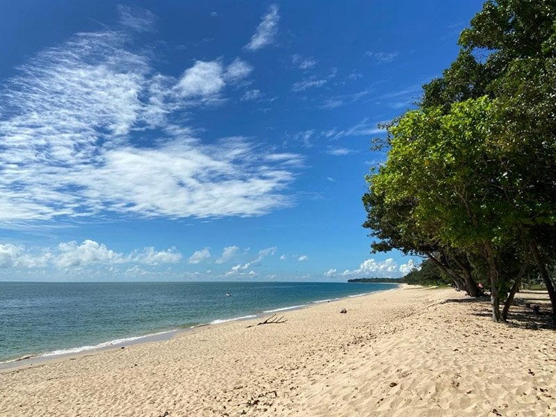 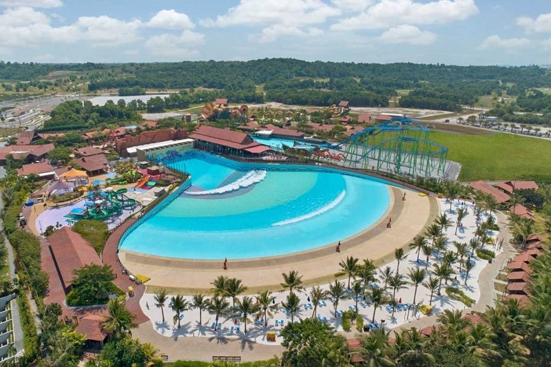
柔佛不受污染、猶如世外桃源的島嶼和海灘是聞名於世的，因此常常會看到許多旅客遠道而來這裡的島嶼度假。其中，Desaru就是最受大家歡迎的海灘之一了! 這裡不僅有大自然打造的美麗海邊，還有人造的水上游樂園，是個老少咸宜的旅遊景點。 Desaru不止有海邊可以休閒玩樂，還有許多價格相對便宜的海鮮餐館可以讓你大快朵頤。據網民推薦的有:Nelayan Seafood by the Coast、Turmeric（泰國餐）和Sea Fire Salt。 這個被良好規劃的海邊還有很多有趣的玩意兒可以嘗試和一探究竟，比如高空攀爬、自駕ATV沙灘車和鴕鳥園，讓你待上五天都不會膩!
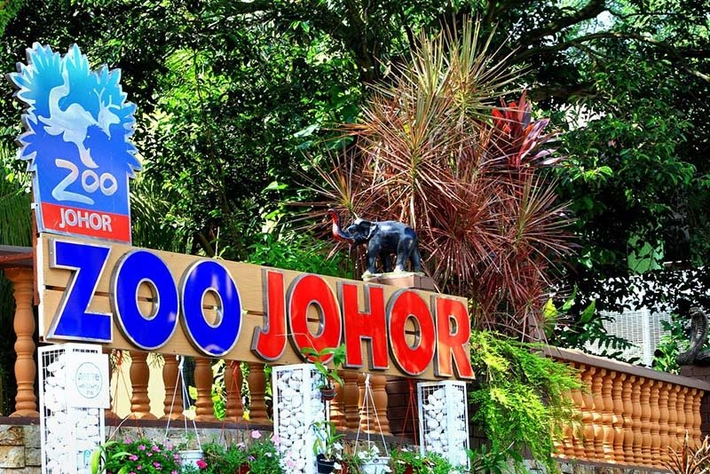 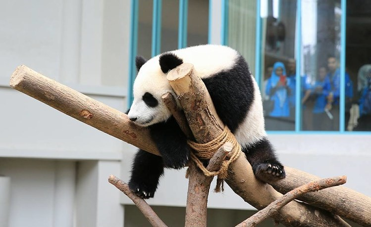 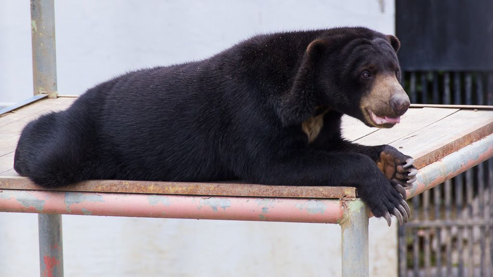 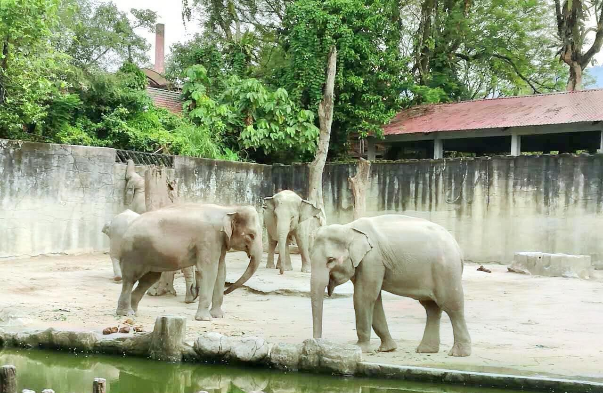
大家去過最便宜的動物園票價是多少呢？這個被網民堪稱“全球入門票最便宜的動物園”就在柔佛啦!成人票竟然只需要RM2! 但可不要覺得便宜沒好貨，這間動物園裡的動物種類繁多，可以看到各種稀有的熱帶雨林動物，一點也不遜色。 值得一提的是，這間動物園是東南亞第一間動物園，早在1928年就建成了。 Johor Zoo就位於新山市，想要周末出外遊玩又不想花太多錢的朋友，Johor Zoo就再適合不過了!
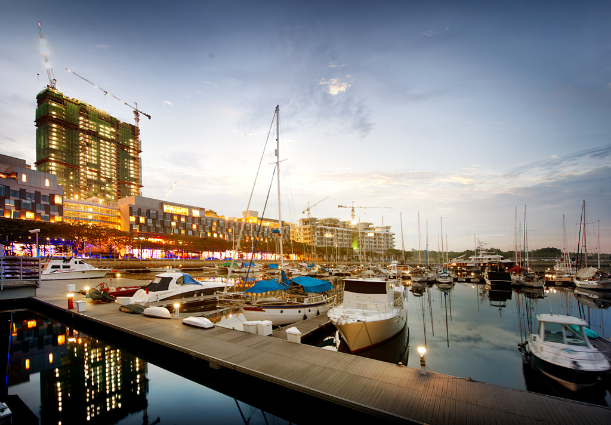 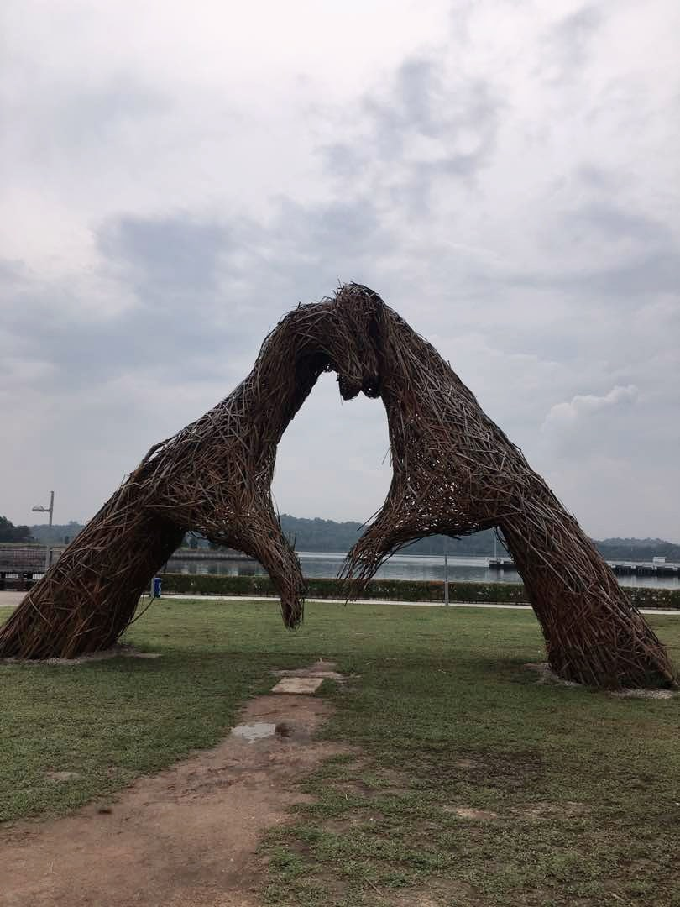
公主港是個一站式的休閒勝地，結合了酒店、商場、餐廳等娛樂場所。這裡的景色優美，尤其傍晚時分，沿著公主港散步，吹著鹹鹹的海風，聽著駐唱歌手的歌聲，多麼浪漫啊! 公主港也有許多的酒吧， 非常適合來約會哦!
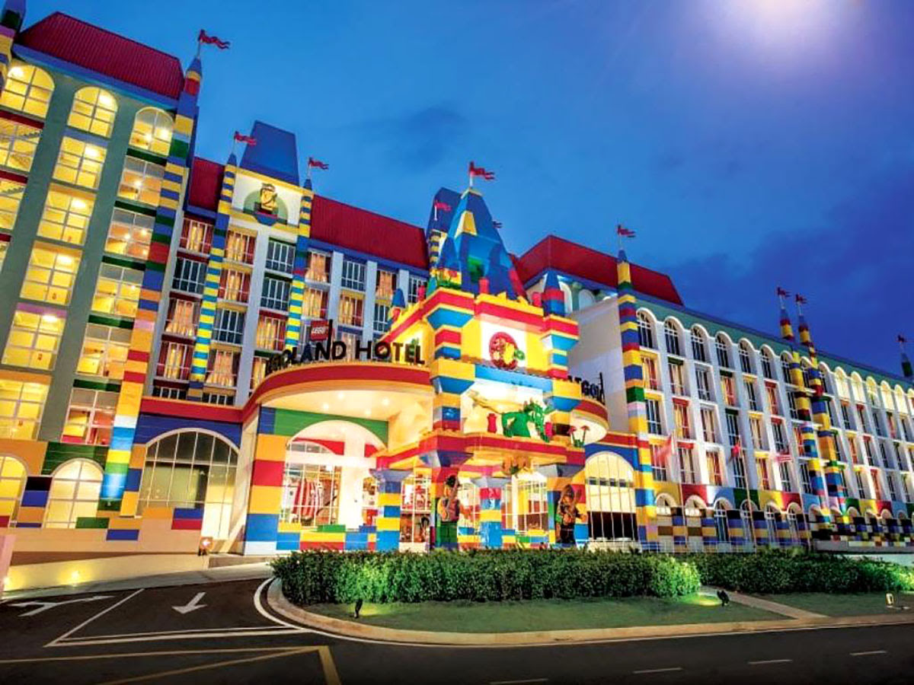 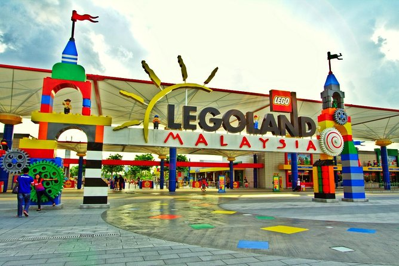
近幾年來充斥著大批外國旅客的，就是 Legoland（樂高樂園）啦!其中最受家庭喜愛的，是他們新穎獨特的主題酒店。 這個主題酒店就像是個迷你的樂園，總共有四個著名主題。住進了樂高主圖酒店就彷彿處在另一個歡樂天地一樣，讓人流連忘返。
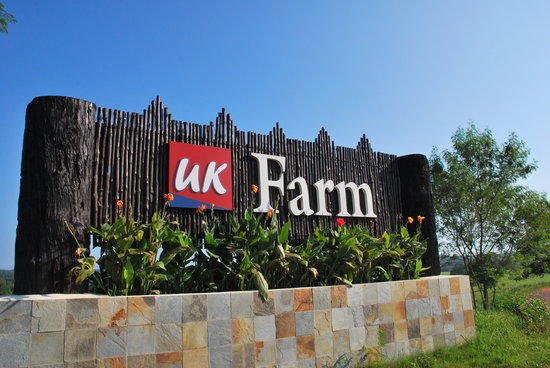 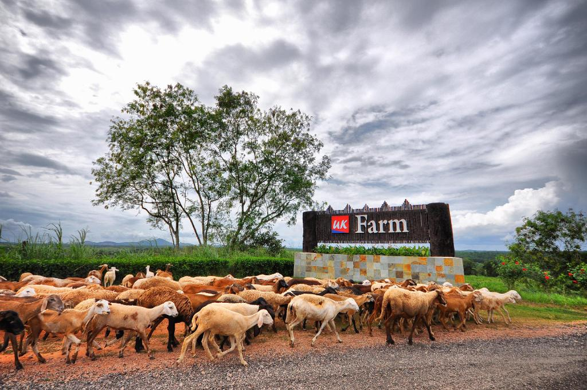
馬來西亞最大的綿羊山羊養殖場就在這裡!一進入這個農場便有迷你巴士帶你環遊，想要有不同體驗的朋友也可以選擇乘坐馬車。 在這裡能近距離和山羊和綿羊接觸，餵養或撫摸都行哦!覺得一天玩不夠的朋友，這個農場還設有民宿。想要體驗早上起來就能看見山羊的原始生活的話，記得提前預定民宿哦!
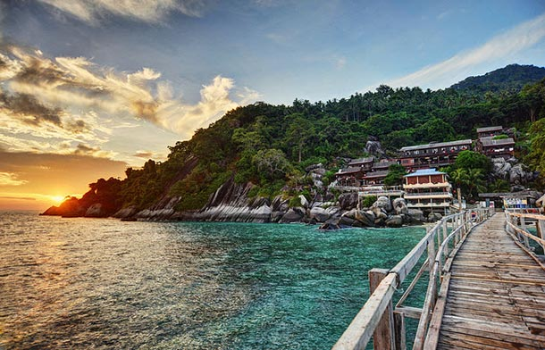 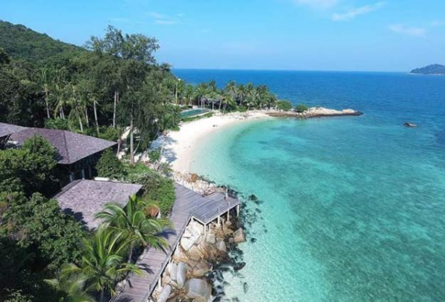
說到柔佛，一定要去的就是這裡的島嶼了!在距離新山市大約2小時車程的豐盛港（Mersing）有著大大小小私人和公共的島嶼。 其中最受國外旅客喜愛的就是 Pulau Rawa 了!那裡的島嶼有限制旅客人數，所以不用擔心會有太多的人潮。其他有名的島嶼有 Pulau Besar、Pulau Sibu和PulauTioman 等。 從豐盛港乘坐渡輪出發，就能到附近的這些島嶼過上暇意的一周末啦!在豐盛港還有一個很酷的活動叫做:跳島（Island Hopping），同樣一天內去往五個極具特色的小島，肯定會是個讓你難忘的體驗。
 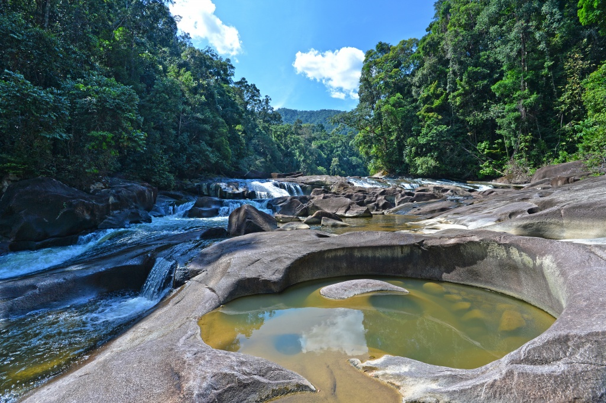
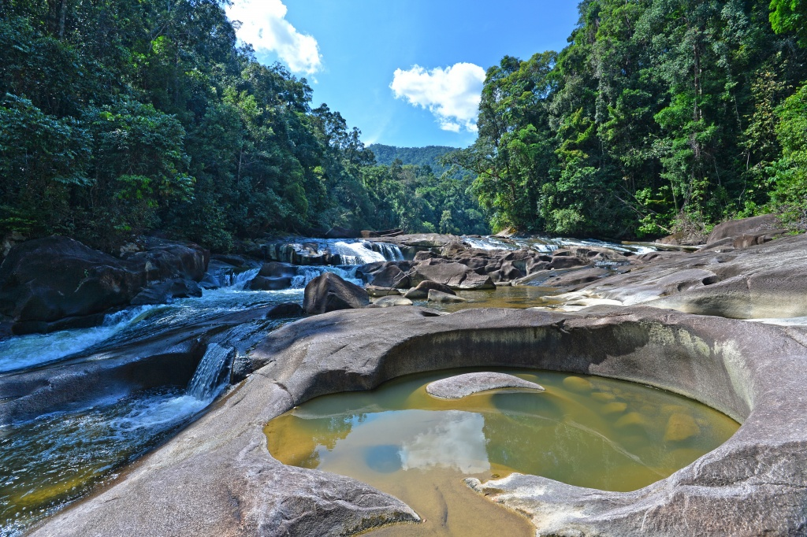
喜歡大自然的你別錯過了這個國家公園!興樓雲冰國家公園是僅次於大漢山國家公園（Taman Negara）的第二大國家公園，橫跨了柔佛州和彭亨州邊界。 這個國家公園也是馬來西亞保留最多元生物生態系統的國家公園之一，其中還有最古老的熱帶雨林，絕對是熱愛大自然者的天堂!
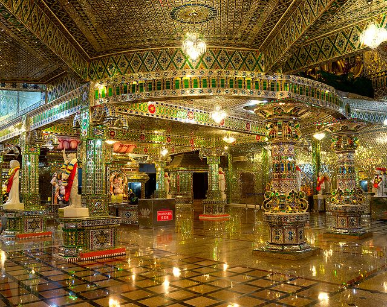
位於新山這間歷史悠久的興都廟，可是世界首間玻璃興都廟哦!裡頭金碧輝煌的設計吸引了大批國外旅客特別到訪，身為馬來西亞子民不必大老遠跑來這裡就能一探究竟，真是一大幸運呢!
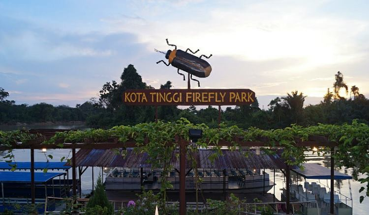 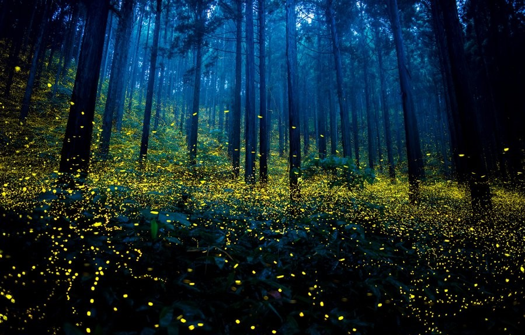
只要是local的人都會知道哥打丁宜螢火蟲公園! 由於哥打丁宜的紅樹林屬於自然保護區，因此保留了一片未被伐木的樹林，才會有那麼多螢火蟲在這裡。 乘船大約45分鐘穿過哥打丁宜的紅樹林，就能看到這個被國外旅客稱為“一輩子一定要看一次”的螢火蟲仙境了!
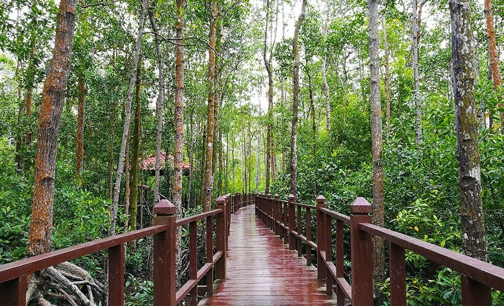 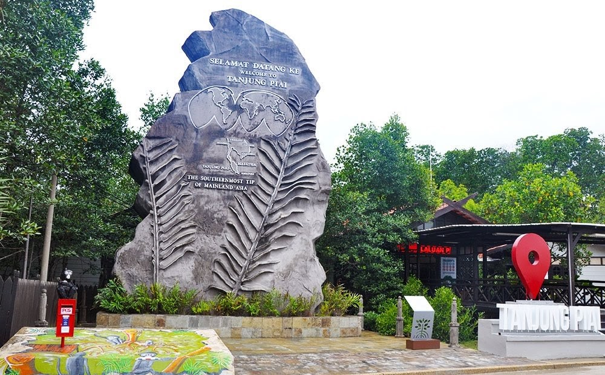
位於Kukup的Tanjung Piai National Park是亞洲大陸的最南端。這個國家公園的步道建設完善， 若是想要呼吸新鮮的空氣和參觀紅樹林，就到這裡來吧!記得也要在那邊和亞洲大陸最南端的地標拍張照哦! 柔佛除了新山市還有那麼多地方可玩，你還不心動嗎？無論是上山下海或是在購物天堂尋歡，在柔佛都能找到適合自己的旅遊景點! 這個來臨的周末，就放下肩上的所有責任，開車前往這個充滿人文地理的南端大州吧!